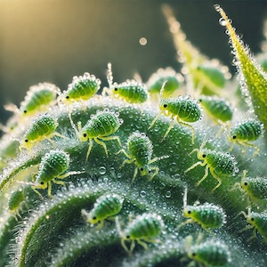
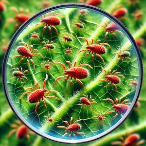
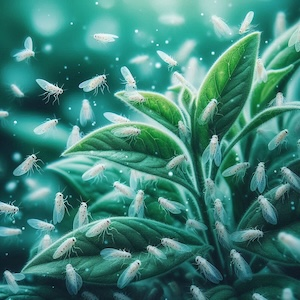
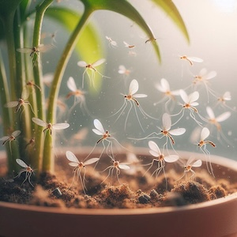

Common Plant Problems
Common Plant Problems
Indoor gardening can be a rewarding experience, but it comes with its own set of challenges. Whether you're growing herbs on your kitchen windowsill or nurturing houseplants in your living room, common issues like pests, leggy growth, and insufficient light can sometimes hinder plant health. Fortunately, there are simple ways to identify these problems early and take action. In this guide, we'll explore the most frequent indoor plant problems and provide natural, effective solutions. Plus, for those with limited access to natural light, we'll dive into innovative growing methods like hydroponic and aquaponic systems, which offer sustainable alternatives for thriving plants year-round.
Pests
Indoor plants can attract various pests that can harm your herbs
-  Aphids
- Small, pear-shaped insects that often appear in clusters. They can damage plants by sucking out sap, causing leaves to curl or yellow.
-  Spider Mites
- Tiny, red or yellow insects that cause a fine webbing on the plant. They suck out the plant's juices, leaving a speckled appearance on leaves.
-  Whiteflies
- Small, white, flying insects that congregate on the undersides of leaves. They also sap plant fluids and can cause yellowing leaves.
-  Fungus Gnats
- Small, dark flies that hover around the soil surface. They mainly affect the roots of plants and can cause root rot.
How to Spot Pests!
Check the undersides of leaves regularly for tiny bugs or eggs.
Look for webbing or yellowing of leaves, which could be a sign of pests.
Inspect the soil surface for tiny flying bugs or larvae
Natural ways to control pests
- Neem Oil: Dilute neem oil with water and spray it on the affected plants. It's effective for many pests and is non-toxic to humans and pets
- Insecticidal Soap: A gentle soap solution can kill soft-bodied pests like aphids and spider mites.
- Diatomaceous Earth: Sprinkle food-grade diatomaceous earth around the base of plants. It dehydrates pests and is safe for plants and pets.
- Homemade Peppermint Oil Spray: Mix peppermint essential oil with water and a small amount of dish soap, then spray it on plants to repel insects like aphids and spider mites.
- Sticky Traps: Place yellow or blue sticky traps near your herbs to catch flying insects like whiteflies or aphids.
Leggy Growth
Leggy growth occurs when a plant grows tall with long, spaced-out stems and small leaves, often a sign of insufficient light. It's common when herbs don’t get enough natural sunlight or when they are too far from a light source.
- Provide Adequate Light: Ensure your herbs are getting at least 4-6 hours of indirect sunlight per day. If not, consider supplementing with grow lights.
- Move Plants Closer to the Light Source: If growing indoors near a window, place plants as close to the light as possible without causing them to burn.
- Prune Regularly: Pinch back the tops of plants (like basil) to encourage branching and prevent them from growing too tall. This helps promote bushier growth.